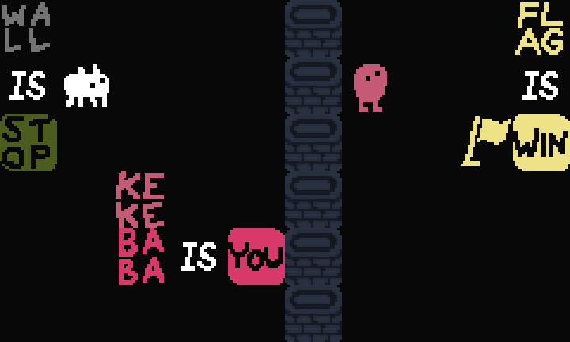
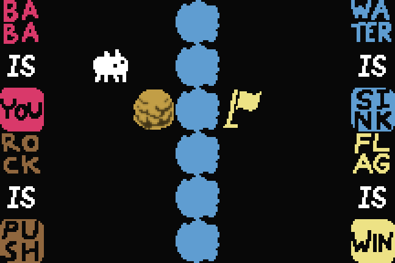
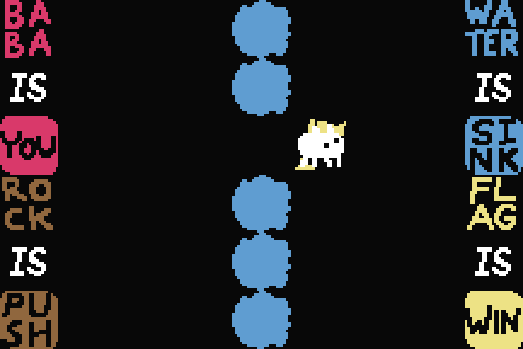
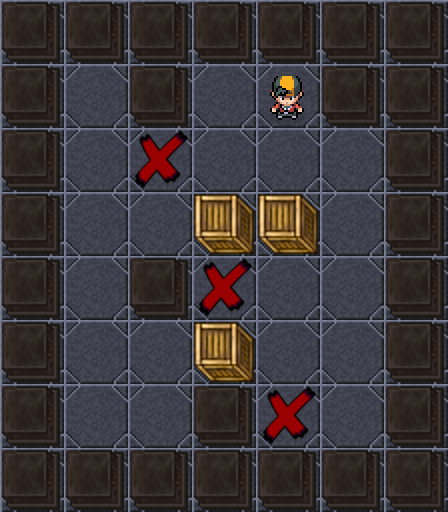

NeuroBridge.SI Baku · 9–10 October 2026 · AI Gaming track
Level-Forge
Type a sentence.
Get a puzzle level that can be won.
Team Azərçay: Nural Shukurlu · Alfaddin Hamidov · Chingiz Aslanov
Demohttps://maced78.github.io/level-forge/
Sourcehttps://github.com/Maced78/level-forge
A hard puzzle level made from one sentence.
100%of 200 test requests produced a level the game could win
0 of 200levels were wrongly marked as winnable
2 gameswork with the same program
Value for the user · 25 points
The problem
?
Can this level be won? Today a person has to play it to find out.
1Puzzle designers draw every level by hand.
2They play each one to check that it works.
3Mistakes they miss reach the players.
Who has this problem: small puzzle-game studios and solo developers who ship 50 to 200 levels per game.
Value for the user · 25 points
Our idea
“Make a hard level about pushing rocks and changing the rules.”
1. You askIn plain words.2. It builds the levelIn the game's own file format.
WON
3. The game plays it and winsBefore you ever see it.
A typical level takes about 0.8 seconds. A hard one takes about 7 seconds.
Prototype and use of AI · 30 points
Our example game: Baba Is You

One of our generated levels, drawn with the game's own graphics.
In Baba Is You the rules are words lying on the board. Push the words and the rules change.
BABA IS YOUyou move Baba
FLAG IS WINtouch the flag to win
WALL IS STOPwalls block you
Baba Is You was made by Arvi Teikari (Hempuli) and released in 2019. We used baba-is-auto, a free open-source copy of its rules by utilForever.
It is only our example. The same steps apply to other 2D puzzle games, and we tested a second one (Sokoban). 3D puzzle games would need extra work and are not tested yet.
Prototype and use of AI · 30 points
An example
“Create a difficult level that tests rule manipulation, strategic object pushing and a changing win condition.”
The level that came back, 15 seconds later.
✓It can be won, in 47 moves.
✓It cannot be won without each skill that was asked for.
✓It is hard. Moving at random, a player avoids the traps 1 time in 128.
✓It opens in the real game.
Prototype and use of AI · 30 points
The computer beats its own level
Start
Move 16
Move 32
Move 47: won
Every solution is played in the original game engine. You can watch it or play the level yourself at the demo link.
Prototype and use of AI · 30 points
It refuses impossible requests
“Put the only rocks behind the water. The water can only be crossed by sinking a rock.”
✕Refused. You need a rock to cross the water, and the rocks are on the other side.
“Make a level with teleporters.”
✕Refused. This game has the word, but its code does nothing with it.
19 of 19impossible requests refused
0 of 10good requests refused by mistake
We wrote these test requests ourselves while building the checker.
Prototype and use of AI · 30 points
How it works
{ }The game's codeand the levels that ship with it
→
Part 1 · done once per gameLearn the rulesAn AI coding assistant reads the code, writes down each rule with the line it came from, and tests each rule in the real game. Words the game ignores are marked.
→
▤Rule bookrules · file format · level checker · solver
▼ Every step below uses the rule book ▼
1UnderstandWhich skills? How hard?
→
2Possible?If not, refuse and say why.
→
3BuildSeveral levels in the game's file format.
→
4PlaySearch finds the shortest solution. The real game replays it.
→
5Fix or labelRepair what failed. Say what was proven.
In: your sentencePart 2 · runs for every requestOut: level file, solution, proof

Step 3: a level it built
Step 4: the real game has won itWho does what. Coding assistant (Claude): part 1. Search program: steps 2 to 5. A language model (Google Gemini) can do step 1 and it works, but on a free key each call takes 7 to 10 seconds. To stay fast, the demo and every test number use the test version, where a keyword reader does step 1.
Prototype and use of AI · 30 points
It works on two different games
Baba Is You
A puzzle where the player changes the rules.
100% of 200 requests gave a winnable level

Sokoban
A puzzle about pushing boxes onto targets.
96.7% of 60 requests gave a winnable level
Both pictures are levels our program made, drawn with each game's own graphics. Adding the second game took about one hour and the main program did not change.
Quality testing · 20 points
Test results
Levels that passed every check, out of 200 requests
Our builder with checking switched off59%
Every check means: winnable, as hard as requested, and needing the requested skills.
0 of 200levels we marked as winnable failed a second, separate replay
100,000random moves where our fast solver and the real game agreed
60 of 60automatic tests pass
Quality testing · 20 points
What went wrong
✓Our first “hard” levels were long but easy. Fixed: difficulty now counts traps.
✓We said pushing was required. A shortcut existed. Fixed: our own search found it.
✓On the second game only 68% passed at first. Fixed: now 96.7%.
!About 1 in 10 hard requests still misses a check. Open: the level is delivered with a warning.
!Gemini works but is slow on a free key (7 to 10 s per call). Open: results use the faster test version.
Compared with today
| By hand | Level-Forge |
|---|
| Can it be won? | play it | proven |
| Shortcuts | found by luck | searched for |
| Difficulty | a feeling | measured |
We did not time human designers or compare difficulty with real players.
Feasibility · 15 points
Cost and next steps
0data to collect. It only needs the game's own code.
1ordinary computer. No graphics card, works offline.
1 hourto add the second game.
Next
1Measure the language model on a paid key.
2Add a third game with no human help.
3Try it with a real puzzle studio.
Tested on two turn-based 2D puzzle games. Other 2D puzzle games follow the same steps. 3D puzzle games need extra work. Very large levels cannot be fully searched.
Originality · 10 points
What is new
{ }The rules come from the game's own code, and each rule is tested.
✓It shows the level needs the skill you asked for.
▲Difficulty is measured from every possible position.
✕It refuses impossible requests and says why.
AI chatbots can also write a level from a sentence. They work from memory and do not check the result.
Mandatory disclosure
Models, data and components
Models
- Anthropic Claude, as a coding assistant: read the game code and wrote the program, tests, demo and this deck with us.
- Google Gemini (free key): reads requests and names levels. It works, but it is slow, so the demo and all test numbers use the test version without it.
- Nothing was trained.
Data
- Two open-source games, unmodified: utilForever/baba-is-auto and xbandrade/sokoban-solver-generator (MIT licence).
- Test requests made by our own script.
- No other data.
Components
- Python 3, C++, pybind11
- pygame, pygame-widgets, numpy
- Playwright and Chromium
- GitHub Pages
Built after the hackathon started. Everything was made on 9 October 2026. Before the event we had only the idea and a written specification. Pages 16 to 18 hold the detailed numbers.
NeuroBridge.SI Baku · AI Gaming track
Thank you
Questions are welcome.
Team Azərçay: Nural Shukurlu · Alfaddin Hamidov · Chingiz Aslanov
Demohttps://maced78.github.io/level-forge/
Sourcehttps://github.com/Maced78/level-forge
Open the demo link to watch the levels being solved, or play them yourself with the arrow keys.
WON
Two levels our program made, both already won.
Appendix A · how a level earns its label
What “verified” means and how difficulty is computed
Four labels
| structurally valid | schema checks, no meaningless words, loaded by the original engine, a controllable object exists |
| proven solvable | a move sequence the original engine replays to WON (C++ and again through its Python binding) |
| fully validated | difficulty score inside the requested band; every requested skill exercised and proven necessary; explicit limits met |
| refused | no valid level can satisfy the request |
Necessity by ablation. The solver is forbidden one kind of move (rule changes, object pushes, win-rule changes, control changes). If it then exhausts the state space without winning, every solution needs that skill.
Difficulty without length
score = 2 × trap bits + 4 × dead-end ratio + 2 × rule changes + 3 × sacrificed rule words
- Trap bits: −log₂ of the chance that a player choosing at random among real moves along the solution never makes the level unwinnable.
- Dead-end ratio: share of reachable states that can no longer be won.
- Bands: easy 0–8 · medium 6–15 · hard 15+. No score if the state space exceeds the bound.
| Requested | Median score | Median solution | Fully validated |
|---|
| easy | 3.5 | 10 moves | 97% |
| medium | 8.3 | 18 moves | 100% |
| hard | 20.85 | 44 moves | 89.4% |
Hard requests build dozens of candidates and deliver the hardest that passes every check. The score is our definition; it has not been compared with human ratings.
Appendix B · full benchmark
200 requests, three ways of making a level, one verifier
Benchmark (seed 2026, scripts in bench/, nothing typed by hand)
| Metric | Random tiles | Blueprint, unverified | Full pipeline |
|---|
| Accepted by the original loader | 100% | 100% | 100% |
| Solvability established (solution replayed in the engine) | 0% | 92% | 100% |
| Requested skills exercised and proven necessary | 0% | 87.5% | 99.7% |
| Difficulty score inside the requested band | 0% | 59% | 95.5% |
| Fully validated | 0% | 59% | 95.5% |
| Latency median / p90 | n/a | 0.001 s / 0.002 s | 0.778 s / 7.406 s |
“Blueprint, unverified” is the same constructor with the verifier and repair loop switched off: the gap is what verification adds. Requests come from templates over the skills the generator supports, so this measures reliability inside its vocabulary.
Can the verifier be wrong?
- False acceptance: 0 of 200. Every level labelled solvable was re-played through the engine's Python binding.
- Model vs real engine: 117 of 117 verdicts agree on 120 deliberately damaged levels (3 hit the engine's search bound).
- Differential test: the fast search model and the original engine compared move by move on 100,000 random moves, with no disagreement.
- 30 mechanic probes on the real engine; validator agrees with the real loader on all 51 shipped levels.
- Regression suite: 60/60 checks pass.
Appendix C · every failure we found
Failures found while building it, and what each one changed
What broke
| The real engine explores only ~2,000 states per second, too slow for proofs. | Wrote a fast model of it; every solution is still replayed in the real engine and the two are differential-tested. |
| “Pushing is required” was false: a loose rule word can be drowned instead of a rock. | Found by the ablation search. Sink gates are now one column thicker than the number of loose words. |
| Early “hard” levels were long but easy: 0–1 trap points on the solution. | Replaced length with a difficulty score from the full state space; hard requests search and keep the hardest candidate. |
| The game's bundled viewer: tiny fixed window, scripted, no sprite for boxes or hedges. | Wrote a resizable keyboard player on the same engine. |
| Hard requests: 10.6% not fully validated. | Delivered with the lower label and the unmet requirement listed. |
| Second game, first run: only 68% fully validated. | Boxes were placed in dead corners; constructor fixed and bands calibrated; now 96.7%. |
| Keyword parser misses paraphrased requests. | Gemini reads such requests correctly but takes 7 to 10 s per call on a free key, so the benchmark and demo still use the keyword parser. |
Compared with how the task is done today
| By hand | Ask an LLM | Level-Forge |
|---|
| Loads in the game | yes | unchecked | checked by the real loader |
| Known solvable | after play-testing | no evidence | replayed in the engine |
| Shortcuts found | if a tester finds one | no | exhaustive ablation |
| Difficulty | feel | a guess | computed |
| Impossible request | found late | not checked | refused with reason |
Not established
- Model ≡ engine is tested, not proven; “unsolvable” means with the four directional inputs.
- Two games, one version each; the difficulty score is not calibrated on human players.
- We did not time human designers.